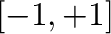
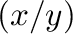
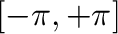

Next: String Processing Up: Built-in operations & functions Previous: General Purpose Functions
| FUNCTION | DEFINITION |
acos |
Arc cosine of x expressed in radians. Interval 
(eg: acos(x)) |
acosh |
Inverse hyperbolic cosine of x expressed in radians. (eg: acosh(x)) |
asin |
Arc sine of x expressed in radians. Interval (eg: asin(x)) |
asinh |
Inverse hyperbolic sine of x expressed in radians. (eg:
asinh(x)) |
atan |
Arc tangent of x expressed in radians. Interval
(eg: atan(x)) |
atan2 |
Arc tangent of  expressed in
radians.  (eg: atan2(x,y)) |
atanh |
Inverse hyperbolic tangent of  expressed in radians. (eg: expressed in radians. (eg: atanh(x)) |
cos |
Cosine of . (eg: cos(x)) |
cosh |
Hyperbolic cosine of . (eg: cosh(x)) |
cot |
Cotangent of . (eg: cot(x)) |
csc |
Cosecant of . (eg: csc(x)) |
sec |
Secant of . (eg: sec(x)) |
sin |
Sine of . (eg: sin(x)) |
sinc |
Sine cardinal of . (eg: sinc(x)) |
sinh |
Hyperbolic sine of . (eg: sinh(x)) |
tan |
Tangent of . (eg: tan(x)) |
tanh |
Hyperbolic tangent of . (eg: tanh(x)) |
deg2rad |
Convert from degrees to radians. (eg: deg2rad(x)) |
deg2grad |
Convert from degrees to gradians. (eg: deg2grad(x)) |
rad2deg |
Convert from radians to degrees. (eg: rad2deg(x)) |
grad2deg |
Convert from gradians to degrees. (eg: grad2deg(x)) |